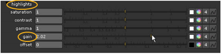

用导航打开主题
使用 ColorCorrect 滑块
ColorCorrect 节点对于快速调整对比度、伽马、增益和偏移特别方便。单个窗口包含所有这些基本修正的滑块，并允许您将这些滑块应用于剪辑的主 (整个色调范围) 、阴影、中间色调或高光。
使用 ColorCorrect 节点调整对比度、增益、伽马或偏移
|
|
1。
|
单击
颜色
>
ColorCorrect
(或按
C
) 在脚本中的适当位置插入 ColorCorrect 节点。
|
|
|
2.
|
将查看器连接到 ColorCorrect 节点的输出，以便您可以看到更改的效果。
|
|
|
3.
|
在 ColorCorrect 属性面板中，使用
通道
下拉菜单选择要处理的频道。
|
例如，要使图像高亮显示，您可以拖动
亮点增益
滑块。

请记住，您可以使用颜色滑块在每个通道的基础上应用任何更正。
|
|
5.
|
在
范围
选项卡，启用
测试
显示阴影、中间色调或高光中被认为是什么。
|
这会用黑色 (用于阴影) 、灰色 (用于中间色调) 或白色 (用于高光) 覆盖输出。绿色和品红色表示范围的混合。
|
|
6.
|
仍然在
范围
选项卡，您可以使用
影子
和
突出显示
查找曲线以编辑被认为位于阴影或高光中的图像的范围。您还可以在查看器中查找当前像素的颜色信息。
|
要将曲线返回到其默认值，请选择它并单击
重置
.
警告:
不要调整
中间音
曲线。中间色调总是等于 1 减去另外两条曲线。
|
|
7.
|
要控制在颜色校正后保留多少原始亮度，请启用并调整
混合亮度
。值 0 表示在输出图像中使用改变的亮度。值为 1 会产生接近原始输入图像的亮度值。
|
注意:
当
混合亮度
设置为 1 时，生成的亮度值接近原始亮度，但不完全相同。差异可能因应用于源图像的颜色校正而异。
使用脚趾节点调整黑色级别
脚趾提升黑色水平，以类似的方式
增益
控制，但与滚降，使白人大多不受影响。
|
|
1。
|
单击
颜色
>
脚趾
创建脚趾节点。将其连接到需要调整黑色级别的图像。
|
|
|
2.
|
调整
电梯
滑块将黑色值更改为指定的灰色值，而不影响图像的任何原始白色值。
|
|
|
3.
|
如果需要，您可以限制影响到某个通道,
通道
控制。
|
|
|
4.
|
如果需要，您可以在
(联合国) premult
通过
下拉菜单首先用该通道分割图像，然后再 multiply 相乘。这样做有时可以提高抗锯齿 egdes 的颜色校正结果。
|
|
|
5.
|
您也可以使用
混合
控件在原始输入 (值 0) 和 Toe 节点的完整效果 (值 1) 之间进行溶解。如果您只想使用一个通道进行混合，您可以使用
面具
控制。
|